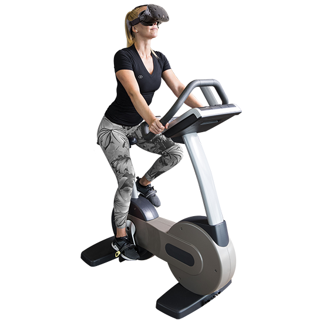

HCI Technologies
HCI Technologies
Topic assignment AR/VR
Opdracht 1
A. Healthcare
Op het gebied van de zorg kan je natuurlijk veel verschillende toepassingen van virtual of augmented reality bedenken. Je zou bijvoorbeeld een virtual reality bril kunnen gebruiken tijdens een opleiding tot arts, wanneer je dan geneeskunde studeert en een bepaalde richting hebt gekozen om je in te specialiseren zou je in een virtual reality omgeving kunnen oefenen met operaties uitvoeren binnen dat specialisatiegebied. Zo kunnen toekomstig artsen comfortabeler en zelfverzekerder worden tijdens het uitvoeren van echte operaties later, omdat ze dan het idee hebben dat ze het al vaak hebben gedaan. Het uitvoeren van een hartoperatie is de eerste keer waarschijnlijk heel zenuwslopend, maar als je vaak hebt kunnen oefenen zal iemand zekerder in zijn/haar schoenen staan.

D. Sports/healthy lifestyle
Op dit gebied zou je augmented of virtual reality kunnen gebruiken om mensen te motiveren om te gaan sporten. Stel dat je een virtual reality bril op hebt terwijl je op een loopband staat te rennen en dan alleen maar mooie natuur om je heen ziet. Rennen in een sportschool is bovendien enorm saai en veel mensen zullen zich snel vervelen, daarom denk ik dat veel meer mensen gemotiveerd zouden raken om te gaan bewegen als ze het idee hebben dat je rondloopt in een tropisch gebied, of over de heuvels in Italië, je zou dan zelfs de loopbaan op de bril kunnen afstellen zodat die gelijk met het beeld omhooggaat wanneer je en heuvel oploopt.

E. Environment/climate change
Op het gebied van klimaatverandering zou je virtual of augmented reality kunnen toepassen om mensen bewust te maken van het onderwerp. Wanneer je echt in een virtuele wereld komt waarin je recht voor je neus ziet wat de impact van klimaatverandering is, is dat heel confronterend en zullen mensen bewuster worden van op wat voor schaal de mens invloed heeft op het milieu. Je zou bijvoorbeeld mensen zich in de zee kunnen laten bevinden en daar afstervend koraal laten zien. Je zou ook de hoeveelheid afval die in de zee nu is op schaal voor iemand zetten zodat je een duidelijker idee krijgt van hoe veel het nou eigenlijk is.

Opdracht 2
Op de website van The Medical Futurists heb ik projecten gevonden over virtual reality in de gezondheidszorg. Als eerst is er een project in St. George’s Hospital waarbij patiënten tijdens of voorafgaand aan een operatie zelf een vr-bril kunnen dragen om de zenuwen te verminderen, het is natuurlijk heel spannend om een operatie te ondergaan en ik vind het heel leuk dat zulke moderne ontwikkelingen zoals een vr-bril op zo een relatief simpele manier kunnen worden ingezet in de zorg. Daarnaast is er een soortgelijk project waarbij Erin Martucci als eerste een vr-bril draagt tijdens het bevallen om zo een kalmere bevalling tegemoet te gaan, naar aanloop van de bevalling kan de bril de tijd helpen doden, ik vind dit een creatieve manier van pijn verlichten en daarnaast een grappig idee dat je tijdens zo een pijnlijk moment dan het idee hebt dat je op het strand in Hawaii ligt.
Links:
VR-bril tijdens de bevalling
VR-bril tijdens operatie
Refelectie
Door deze opdracht ben ik wel actiever begonnen met nadenken hoe je een HCI onderwerpen zelf zou kunnen toepassen in het dagelijks leven. Dit helpt bij het krijgen van een beeld van wat wij tijdens de labweken zelf zouden kunnen gaan maken. Daarom vond ik het een leuke opdracht om te doen. Wel merk ik dat ik ech tbest wel onbekend ben bij dit onderwerp, daarom heb ik veel gegoogeld en toen toch wat leuke projecten gevonden. Achteraf bedenk ik me dat ik bij AR&VR heel snel aan VR brillen denk en daar eigelijk al mijn ideeen rondom gebaseerd heb, maar er is natuurlijk veel meer wat je kan doen binnen het gebied van AR&VR en de volgende keer zou ik het verder kunnen gaan zoeken.